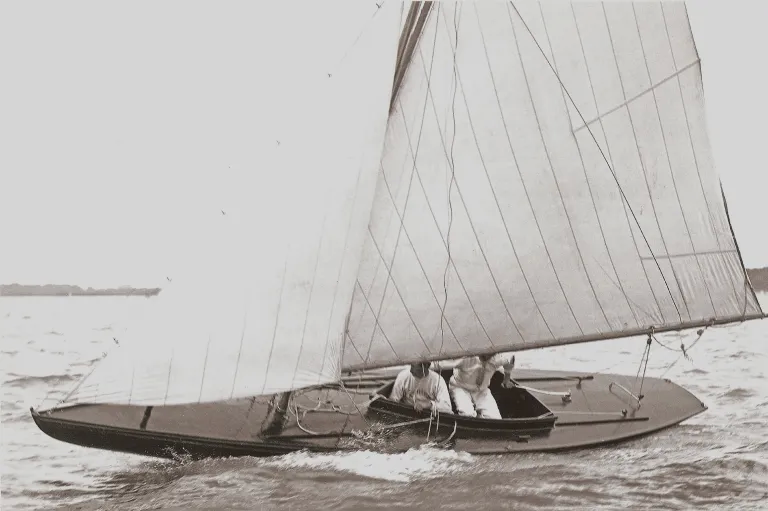
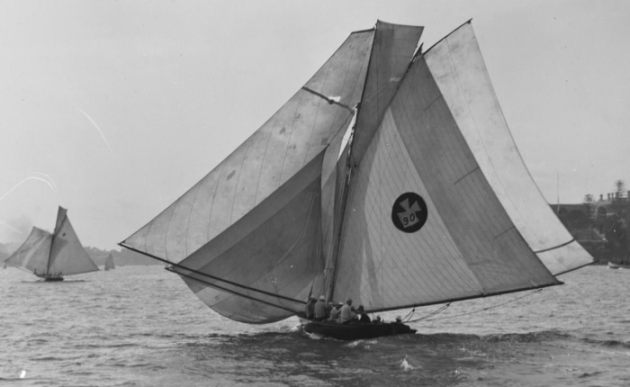
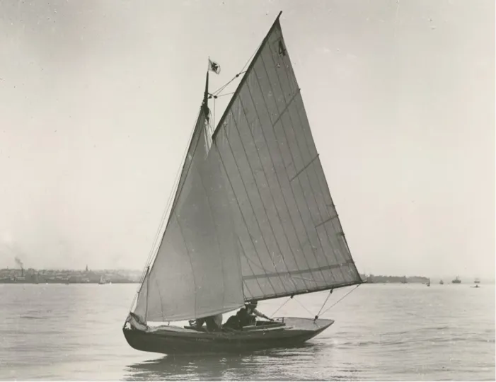
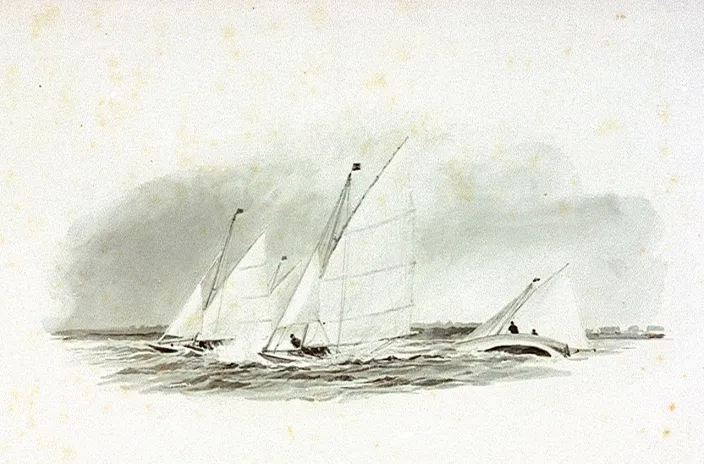
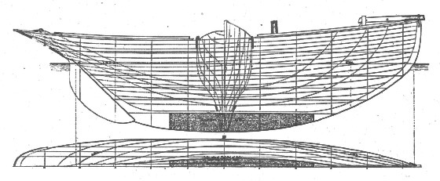
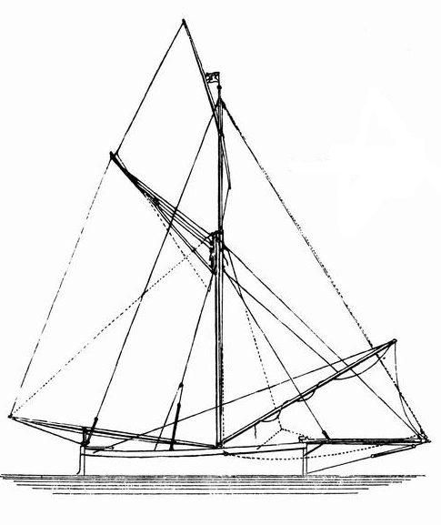
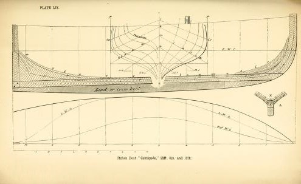

“Racers in every sense of the word”: the Raters

The next ancestor of the modern racing dinghy, the Rater, was created by a new style of sailor and a new style of rules. The catboat, sandbagger, sharpie and canoe were created in the same way as earlier craft; they had evolved out of workboats or the inventions of enthusiastic amateurs. But the Rater was influenced by four new factors – rating rules, professionally trained designers, a move to smaller boats, and women skippers – and it created a new style of boat, and may have proven to the world that the future of performance lay in efficiency rather than brute force.
The Rater was basically the first type where restrictions on sail area dominated design, and drove it towards light, efficient hulls. Until the Raters arrived, there had been two basic ways to classify and rate sailing boats – overall length and by hull volume. The simple length measurement was normally used in small boats, like the sandbaggers and catboats. Larger yachts were rated according to existing rules that were used to assess the size of merchant ships for harbour dues, light fees and other taxes.
Like most simple rules, the tonnage measurement had simple flaws. For a start, the use of a tonnage measurement for rating implicitly assumed that a bulkier boat was a faster one, irrespective of whether the bulk came in the form of excessive beam (which reduces speed) or extra length (which increases speed). Secondly, since commercial craft had to be able to measured while they were afloat in port and with a hold full of cargo, the various tonnage rules often used measurements that designers could easily avoid. In Britain, for example, the problem of measuring the depth of a commercial boat full of cargo meant that the various tonnage rules assumed that a boat’s depth was linked to its beam.
The British tonnage laws were one of the biggest, and most harmful, forces that drove British yacht design for half a century. Designers realised that because volume created by beam was taxed but draft was not, if they created a narrow boat it would rate lower than a beamy one. They could then give the narrow boat enough stability by increasing the draft to lower the ballast. “Slowly at first, but steadily, yachts became longer, narrower, and deeper; the crack yacht of one year being displaced the next by something with more length, less beam, and more ballast” wrote George Watson, one of the greatest of all designers. Beam was taxed so heavily that over just 13 years, boats in the “5 ton” class increased their length by one third and their sail area by two thirds, merely by reducing beam. This was the era of the British cutters that were so long, thin and deep that they were called the “planks on edge”.


The American clubs changed their tonnage rules to get away from the beam problem, but they shared another problem with the Brits. Perhaps because the tonnage rules were a hangover from taxation laws, and the taxman was only concerned about cargo capacity, neither American or British rules rated sail area. Sailors recognised early on that the type of rig was a vital factor in racing, and as early as the 1840s, schooners were given a huge advantage under the rating rules so that they could compete with single-masted rigs. But as far as the rating rules were concerned, sail area was irrelevant, and sailors could hang watersails, topsails, staysails and anything else they wanted onto spars that were as long as they could keep up.
Rule makers faced practical problems with measuring sail area; it was a tricky issue in those days when boats could set and drop topmasts, jackyards, square sails and a variety of jib than it is with modern rigs. And to many sailors, it wasn’t just that sail area couldn’t be measured; it was also that it shouldn’t be measured. To them, a boat that could carry more sail was a better boat. “If the builder of a yacht improves her form of hull while keeping the general dimensions in length, breadth, depth, and weight of ballast the same so that she is able to carry more sail, he is at once taxed for his ingenuity in having accomplished this improvement” complained one sailor when sail area was finally measured. “It is the object of a builder to develop as much boat for length as is consistent with a good model” wrote another, ignoring the fact that such boats were expensive and unseaworthy. Even the great naval architect Scott Russell felt that measuring sail area stopped the designer from being “left free to make the best ship that could be built”. The fact that the old rules that did not restrict sail area led to vast, inefficient and costly rigs on top of hull distorted to carry more sail at the expense of efficiency seems to have escaped many sailors and designers.

It was the designer and journalist Dixon Kemp who, in 1880, proposed a new type of rating rule, one which measured sail area and length alone. It seems that Kemp and other trained designers were driven partly by disgust at the direction of development under the old rules, partly by a more scientific and sophisticated understanding of the physics of sailing, and partly by the recognition that, in Kemp’s terms, “increase of sail-spread meant extra cost for the sails themselves, and extra cost for the means of carrying them”. Kemp’s rule was as simple as could be – simply measure the waterline length, multiply it by the sail area, and add a divisor so that the final result was a simple figure that sailors could understand and relate to older rules.
In 1882, Kemp’s rule was adopted as an optional system by the RYA, although clubs held firmly to the flawed tonnage rules. In the same year the Seawanhaka Corinthian Yacht Club of New York adopted a modified version of the rule, and was later followed by other US clubs. The US versions of the Length and Sail Area concept allowed much bigger sailplans than Dixon Kemp’s original version, and measured both overall and waterline length. The adoption of the “Seawanhaka Rule” and its variations helped to kill off the dangerous rigs in small boats, and led to a breed of rather conservative big, beamy and heavily canvassed cruiser/racers that W P Stephens called “the high point of designing in America” but others like designer B.B. Crownshield called over-rigged “brutes”.
It was only when a committee lead by former Mersey centreboarder and canoe sailor Sir William Forwood abolished the British tonnage rule and adopted the Dixon Kemp rule in 1886 that the full potential of the concept was unleashed to create the fastest and most radical development in small boat design in history.[1] The Dixon Kemp rule applied across the board, from 14 foot dinghies to the 130ft cutters of the “Big Class”, but the small yachts, large centreboarders and canoes drove the developments.
Even before the new rules arrived, the UK sailing scene was moving to small boats. The problems with the old tonnage rule had almost killed off the big racing cutters. The building and racing of the giant cruiser/racer schooners had also almost stopped when cruisers moved to the new steam yachts. The increasing wealth and leisure time of the middle and upper-middle classes allowed many new sailing clubs to form, but few of them could afford to offer the rich cash prizes that were needed to entice the big boats to race. Instead, owners and clubs turned to smaller yachts (although “small” in those days could mean something similar to a 30 Square Metre) which could be sailed by amateurs.
To put the small Raters in perspective and to see their development from mini yacht to big dinghy, we have to look at the boats they replaced. Once again, the first developments started in small yachts rather than in dinghies – but it was almost for the last time. By the time the story of the Rater was over, dinghies were to take over as the driving force in the development of the entire sport of sailing.

Mascotte is an example of the style of extreme “plank on edge” cutter that the British were turning away from. The famous dinghy designer Uffa Fox sailed a replica and noted that although it could reach a surprisingly high speed, it was only when it was heeling over so far that half the deck was buried and the narrow interior was unusable.

